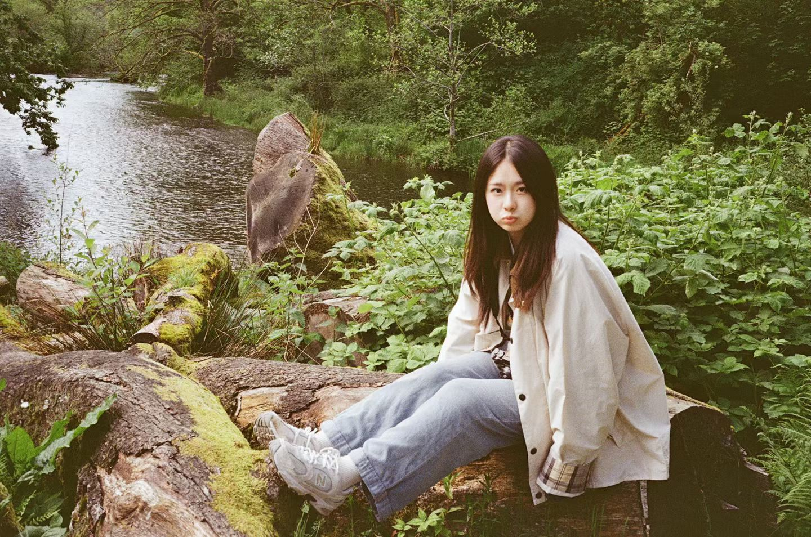

伦敦大学学院 University College London
QS 2027 · 8MA Ethnographic and Documentary Film (Practical)
调研 · 人物观察 · 纪录片叙事 · 全流程内容制作
01 · About / 关于

I notice what people feel, then shape what they share.
我是张馨天（Katherine），一名电影人和视觉叙事者，拥有皇后大学电影与媒体专业以及伦敦大学学院（UCL）民族志与纪录片专业的背景。
我的工作涵盖纪录片拍摄、摄影、剪辑和视觉内容，从构思创意、进行研究，到实地拍摄、导演和后期制作。我的作品形式多样，既有短篇数字内容，也有观察性纪录片，例如我在法国安提布拍摄的毕业作品《Walk Over My Work》。
我热衷于将观察转化为故事，无论是通过电影、照片，还是介于两者之间的形式。
MA Ethnographic and Documentary Film (Practical)
调研 · 人物观察 · 纪录片叙事 · 全流程内容制作
BA Film & Media · GPA 3.55 / 4.3 · Major GPA 3.86 / 4.3
Dean’s Honour List · 连续三年
从评论、行为、语境与人物观察中捕捉时代情绪与真实信号。
把洞察提炼为具有辨识度的概念、文案、脚本与视觉语言。
让想法转化为拍摄、社媒、IP 联动与线下体验。